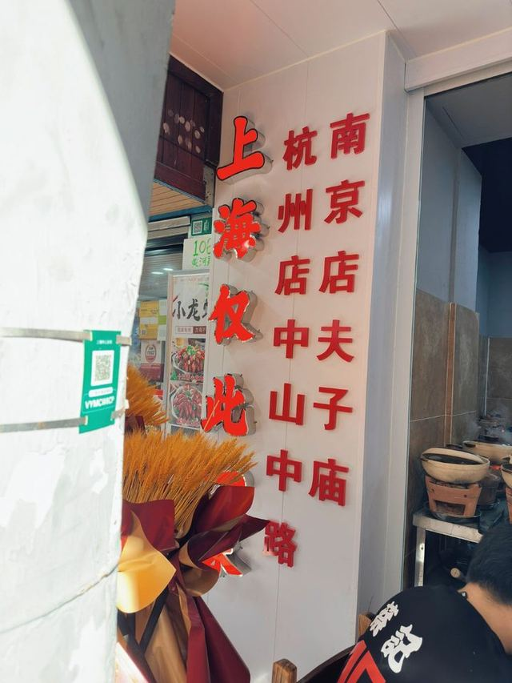

People's Park marriage market (parents' matchmaking corner) 人民公园相亲角（上海人民公园）
Weekend gathering in a park; watch-only · Huangpu
LikelyNo 2026 on-site reportParents trade A4 sheets about their children, weekends about 12:00-17:00. Free to watch; ask before photos.
No 2026 on-site report
The evidence for this one has a gap. Check on the day or call ahead.
Why it matters
Since about 2004-05, mostly local parents over 50 have swapped A4 sheets listing a child's age, height, education, job, income and often home ownership, with no photo or name. If you like a sheet, you ask for contact details. It is the human side of China's marriage debate, and free to watch.
What to see
Umbrellas, laminated A4 sheets and handwritten notices taped to trees and railings; parents on folding stools; zones for different birth decades; some sheets now in English (Jan 2026); a broker or two with a stack of cards.
How to get there
Enter by the main gate on West Nanjing Road and walk the central path past the covered corridors; the market is on both sides. Walk slowly.
Local tip
Walk the whole loop first, then stop where you can see how parents read a sheet. The Shanghai History Museum and MoCA are inside the same park.
Address notes
Parents sit along the covered corridors either side of the main-gate path, on flower-bed edges and along the roadside.
Watch out
Not a performance. Do not photograph a sheet or a face without asking (courtesy; no posted rule found). Brokers approach within seconds: say 不用了 (bù yòng le, 'no thanks'). Do not give your WeChat or passport details.
Did you know
People's Square and People's Park were the Shanghai Race Club's third racecourse (1862). On 27 August 1951 the Shanghai military control commission took the land back. The 1933-34 clubhouse on Nanjing West Road is now the free Shanghai History Museum.
A Chinese history article says the gentle curve of Nanjing West Road and Wusheng Road is a leftover of the racetrack.
Caveat and sources
English Wikipedia's claim that the whole outline still follows the track is not confirmed; only the curve is documented, by one Chinese article. Museum: free; no booking needed for ordinary visits since 1 Jul 2024, but one May 2026 feature says real-name booking, so bring your passport. Tue-Sun 9:00-17:00, last entry 16:00, closed Monday.
What was checked, and what was not
Read by 16 Nov 2026
Present-tense reports: Newstalk (25 Jan 2026), Global Voices (5 Nov 2026), Wikipedia (edited 1 Nov 2026: every Sat and Sun, noon-5 pm), an Aug 2026 matchmaking article. Park coordinates checked. No closure or ban found.
Not checked
No dated 2026 on-site Shanghai report (newest on-site report: CNA, Feb 2025). The weekend pattern is standing practice, not a notice for 28-29 Nov. Park gate hours and entry fee: no 2026 official figure.
Sources
Nearby

